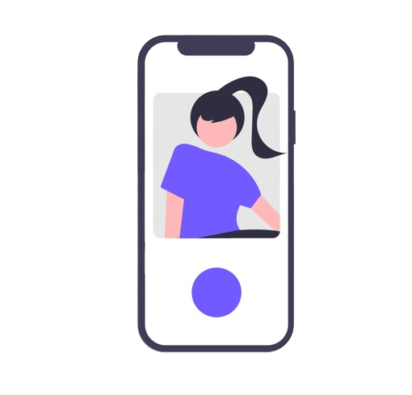
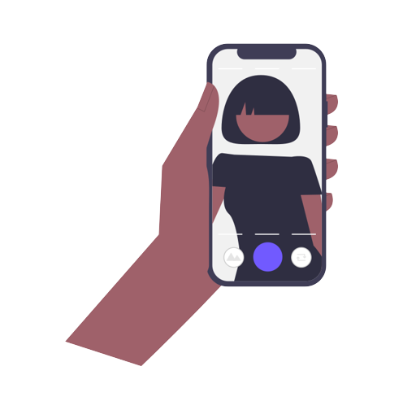
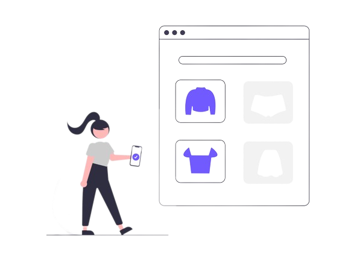
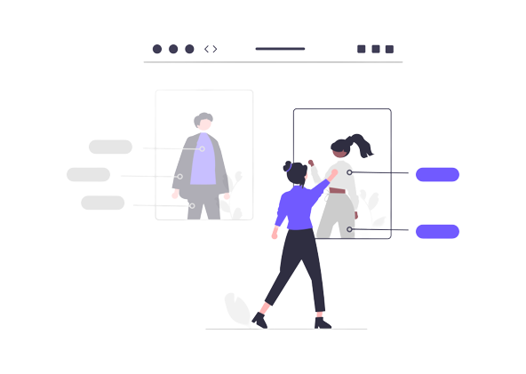
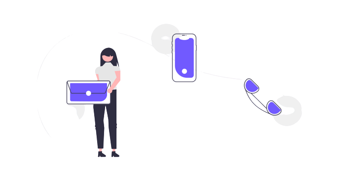
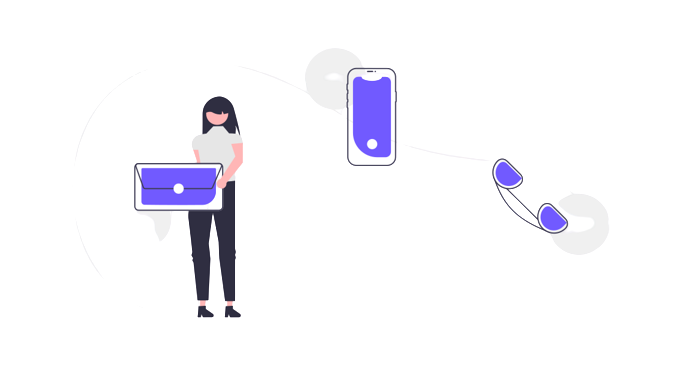

Vmode
Vmode en bref !

Il était une fois, dans une ère où la mode était un mélange d'excitation et de frustration, que l'histoire de Vmode commença. Tout a commencé avec deux amies, Selwa et Fanny, qui se retrouvaient tous les matins devant le dilemme habituel : "Qu'est-ce que je vais porter aujourd'hui ?" Chaque jour, elles s'envoyaient des photos de leurs tenues potentielles, cherchant des conseils et des avis.
Pendant ce temps, deux autres amis, Luca et Imane, étaient confrontés à un autre problème de la mode : les interminables files d'attente et les cabines d'essayage bondées. Ils se plaignaient sans cesse de devoir essayer plusieurs tenues, enlever et remettre leurs vêtements à maintes reprises, tout en perdant un temps précieux.

Et si, au lieu de devoir se déplacer dans les magasins et de passer des heures à essayer des vêtements, il existait une solution virtuelle qui leur permettrait de visualiser les tenues directement sur eux, sans changer de vêtements physiquement ?
C'est ainsi que l'idée de Vmode prit forme. Selwa, Fanny, Luca et Imane étaient déterminés à créer une application révolutionnaire qui permettrait aux gens d'essayer des vêtements virtuellement, en utilisant simplement leur téléphone. Plus besoin de se rendre dans les magasins, de faire la queue ou de se changer à maintes reprises. Un développeur était indispensable à la création de l'application, c'est pour cela que ce groupe d'amis à donc fait appel à Guilian.

Aujourd'hui, Vmode est le fruit de cette collaboration passionnée. Une application d'essayage de vêtements virtuelle qui permet à chacun d'explorer la mode, d'exprimer son style personnel et de prendre des décisions éclairées, le tout depuis le confort de son foyer. Une véritable révolution dans le monde de la mode, où la technologie et la créativité se rencontrent pour offrir une expérience de shopping unique et stimulante.
N'attends plus, fais partie des premiers à tester…


Application Android
Télécharger la beta

Application apple
Indisponible pour le moment
Contacte-nous !

Instagram
Linkedin
Contactez-nous
Application Android
Télécharger la beta
Application apple
Indisponible pour le momentContacte-nous !

Contactez-nous